Miembros del Colegio técnico de magia Metropolitana de Tokio
- Director
- Instructores
- Estudiantes de primer año
- Estudiantes de segundo año
- Estudiantes de tercer año
- Directores/Asistentes
Masamichi Yaga
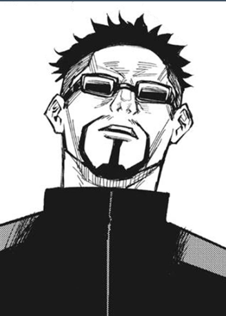Masamichi Yaga s uno de los personajes de la serie manga Jujutsu Kaisen. Fue el director y antiguo profesor de los estudiantes de primer año del Colegio Técnico de magia Metropolitana de Tokio.
Descripción
Yaga fue un hombre fornido y de estatura alta. Su cabello solía llevarlo corto y rapado de ambos lados de su cabeza.Poseía cejas gruesas y ojos pequeños de color oscuro. Llevaba una combinación entre bigote y barba, y la mayor parte del tiempo llevaba puesto lentes de sol. Su vestimenta característica consistía en una chaqueta negra de manga larga con cremallera en medio, una camisa blanca debajo de ésta, pantalones negros y zapatos negros.Durante Tokyo Metropolitan Curse Technical School, vestía una chaqueta negra abierta sobre una camisa blanca de cuello alto con cremallera.
Personalidad
Demostró ser un hombre serio y dedicado a su trabajo. Tenía un fuerte sentido de responsabilidad con todos los alumnos, profesores y asistentes del Colegio Técnico de Magia Metropolitana de Tokio. Además, se sentía profundamente orgulloso del trabajo que ejercía. Era el encargado de entrevistar a todo aquel que aplique al colegio y solía ser bastante meticuloso con sus cuestionamientos. Fue considerado un tanto quisquilloso y solía molestarse fácilmente con asuntos relacionados a Satoru Gojo. Le molestaba que otros lleguen tarde a los encuentros y se molestaba aún más cuando conocía a personas con motivaciones débiles o frágiles.
Satoru Gojo
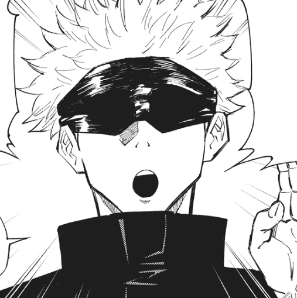Satoru Gojo es uno de los personajes de la serie manga Tokyo Metropolitan Curse Technical School y uno de los protagonistas de la serie secuela, Jujutsu Kaisen. Conocido con el apodo de El Chamán Más Fuerte es uno de los cuatro chamanes de Clase Especial, antiguo compañero de Suguru Geto y Shoko Ieiri, y actual profesor del Colegio Técnico de Magia Metropolitana de Tokio, encargado de los alumnos de primer año.
Descripción
Satoru es un hombre delgado y bastante alto, llegando a medir 190 centímetros. Su cabello es de color blanco y suele llevarlo peinado hacía arriba con lo mechones puntiagudos cuando se encuentra ejerciendo como maestro o chamán; en sus tiempos libres, suele tener todo su cabello desarreglado y gran parte de éste tiende a caer su cara, tapando gran parte de su frente y ojos. Sus ojos son de un peculiar color azul claro y en sus iris, tiende a manifestarse una imagen similar al cielo. A menudo usa una tela de color oscuro para cubrir sus ojos; mientras que, en la serie precuela Tokyo Metropolitan Curse Technical School, los ojos de Gojo están vendados con vendas blancas. Durante sus días de juventud, solía usar lentes de sol en lugar de vendas o telas. Su vestimenta característica consiste en un abrigo negro de cuello alto, pantalones negros largos y zapatos negros; ésta misma vestimenta, en el anime, es representada en color azul marino. Al optar por vestirse de manera más informal, Gojo usa unos lentes oscuros y redondos en lugar de una venda en los ojos y vestimenta bastante casual, generalmente un camisas oscuras de mangas largas y pantalones holgados. Cuando era niño solía utilizar una vestimenta tradicional japonesa que consistía en un kimono y su haori tenía un patrón con formas similares a las libélulas.En otras ocasiones, utilizaba ropa casual como sudaderas de color claro y pantalones oscuros.
Personalidad
Satoru es un individuo complejo, ya que generalmente, como maestro puede ser una figura de autoridad asignada para enseñar a los novatos sobre el peligroso mundo del jujutsu, pero puede ser casual, amigable y juguetón con personas como sus estudiantes y colegas, pero es indiferente y cruel con personas como los ejecutivos de los Chamanes; incluso tiene un sueño de crear a los mejores chamanes para combatir contra estos. Tiene mucha confianza en sus habilidades y reputación como un poderoso chamán. Descartando casualmente las amenazas personales de Sukuna, podría derrotar al Rey de las Maldiciones fácilmente. Durante sus días de juventud, era una persona bastante arrogante y constantemente cuestionaba abiertamente por qué necesitaba ayudar a la humanidad[8]. Sin embargo, tras la muerte de Riko Amanai y la desaparición de Misato Kuroi, junto con la traición de su antiguo mejor amigo Suguru Geto, hicieron que madurara enormemente. A pesar de su actitud relajada e infantil, Satoru tiene momentos donde se vuelve serio e implacable, llegando a ser bastante despiadado al enfrentarse en combate a Maldiciones y a usuarios malditos. En su pelea contra Hanami, le rompió sus astas y lo inmovilizó para luego asesinarlo. Según Suguru Geto, Satoru solo utiliza todo su poder cuando no hay nadie cerca de él, aunque esto lo hace únicamente porque considera que son un estorbo. Tampoco tiene problemas en acabar con vidas humanas inocentes si con eso puede exorcizar a las Maldiciones. En Shibuya, a Satoru no le tembló el pulso y asesinó a mil humanos modificados. A diferencia de Kento Nanami, Satoru puede ser muy frío e indiferente con la muerte de gente inocente, aún así, él se preocupa mucho por la vida de sus estudiantes y de sus compañeros chamanes, sintiéndose culpable cuando Itadori casi muere por Sukuna. Sin embargo, a pesar de su altivez y fuerza, Satoru es más humano de lo que parece. Después de derrotar a Toji, Satoru recuperó el cadáver de Riko con una mirada afligida, mostrando que aunque su reciente victoria engreída nubló temporalmente sus sentimientos, todavía sentía algo de dolor por su muerte. Trató de matar a los miembros de Star Religious que se reían de la muerte de Riko, aunque fue detenido por Suguru Geto, en quien confiaba como una brújula moral en ese momento, antes de tomar cualquier medida. Además, Satoru más tarde quedó visiblemente horrorizado y entró en pánico después de enterarse de que Suguru, su único mejor amigo, se había convertido en un brujo. Satoru intentó razonar con su amigo, pero finalmente se dio cuenta y aceptó que había perdido a la única persona que realmente veía como un igual. Después de tener que acabar con Suguru antes de que surgiera más calamidad, fue el trauma de Satoru por perder a su mejor amigo lo que causó su caída final en Shibuya. También estaba angustiado cuando Yuji aparentemente murió. Satoru no teme en desafiar las normas e ir en contra de las órdenes de los altos mandos y suele actuar a sus espaldas, como cuando decide no informar que Yuji Itadori estaba vivo cuando todos pensaron que había muerto, lo que frecuentemente provoca la ira de personas como el director Gakuganji del Colegio Técnico de Magia Metropolitana de Kioto.
Atsuya Kusakabe

Atsuya Kusakabe es uno de los personajes de la serie manga Jujutsu Kaisen. Es un chamán de primer grado y profesor del Colegio Técnico de Magia Metropolitana de Tokio, encargado de los alumnos de segundo año.
Descripción
Atsuya es un hombre bastante alto y de cuerpo trabajado. Tiene su cabello un tanto desordenado de color negro, cejas largas y delgadas. Sus ojos son de color negro. Su vestimenta tradicional consta de una chaqueta de manga larga de color marrón con una camisa abotonada de color negro y una corbata de color oscuro, pantalones negros y zapatos negros. Siempre lleva cargando a su katana, la cual, posee una funda de color negro.
Personalidad
A diferencia del resto de los chamanes, no desea desperdiciar su vida y tiene un enorme temor a la muerte. Prefiere realizar misiones que involucre evacuar ciudadanos o cualquiera que no ponga su vida en peligro, incluso acepta enfrentarse a otros, siempre y cuando no sea una maldición de grado especial. No tiene miedo de hacer uso de excusas para evitar situaciones que arremeten con su vida. Incluso cuando todos los chamanes se encontraban en Shibuya intentando rescatar a Satoru Gojo, dejo en claro que Gojo no es la única persona que requiere de ayuda y prefiere ayudar civiles.
Megumi Fushiguru
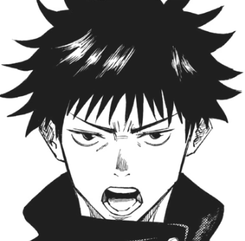Megumi Fushiguro es uno de los protagonistas de la serie manga Jujutsu Kaisen. Es un estudiante de primer año del Colegio Técnico de Magia Metropolitana de Tokio, y compañero de Yuji Itadori y Nobara Kugisaki. Su padre es Toji Fushiguro, antiguo miembro del Clan Zenin y hermanastro de Tsumiki Fushiguro. Como miembro de sangre de uno de los tres grandes clanes, nació con el talento innato de hacer uso de la Técnica de Sombras de Diez Tipos, además, dado a un acuerdo concluido entre su padre y Naobito Zenin, si Megumi se ve privado de la custodia de Satoru Gojo, Megumi pasaría a ser la próxima cabeza del Clan Zenin.
Descripción
Megumi es un joven alto, llegando a medir 175 centímetros. Su cabello es oscuro, y suele llevarlo arreglado y puntiagudo cuando se encuentra en clases o en una misión; lleva su cabello desarreglado, cuando descansa. Gege Akutami describió su cabello como errático. Sus ojos, en el manga son representados de color verde claro, mientras que en el anime, son de color azul oscuro. Lleva el uniforme estándar del Colegio Técnico de Magia Metropolitana de Tokio, que consiste en una camisa de manga larga y un cuello alto de color oscuro, pantalones y zapatos marrón oscuros; ésta misma vestimenta, en el anime, es representada en color azul marino. Durante su visita a la Escuela Secundaria Municipal Sugisawa, vistió una camisa blanca, pantalones de vestir negros con zapatos de color claro. Cuando no está realizando misiones, viste pantalones negros holgados, una remera negra de mangas largas también holgada de cuello amplio y calzado oscuro. Durante su búsqueda por Kinji Hakari, se lo vio utilizando, una campera de oscura con cuello alto.
Personalidad
Megumi suele ser un joven bastante tranquilo, serio y reservado. Nobara Kugisaki se queja de que Megumi nunca dice nada de sí mismo, y de que debería comenzar a decirles más cosas sobre él. A pesar de no mostrar demasiado interés en lo que suelen hacer sus compañeros, siempre se encuentra alrededor de estos y suele acompañarlos a distintos lugares, y no parece mostrar rechazo a la idea de salir de paseo con ellos. Constantemente, se deja llevar por las ideas y bromas de Nobara e Itadori. Incluso cuando era niño, Megumi era muy severo, serio y reflexivo, hasta el punto en que Satoru cuestionó si realmente estaba en primer grado en el momento en que se conocieron. Cuando Satoru explicó por primera vez la situación con el clan Zenin, Megumi reveló que no se preocupaba por su padre y asumió que él y la madre de Tsumiki habían terminado de cuidarlos. Pudo entender que había sido vendido al clan Zenin, pero solo accedió a ir si Tsumiki también estaría feliz. Megumi siempre ha estado molesto por la actitud de Satoru desde que se conocieron. No le importaba la idea de convertirse en hechicero y se cansó más con el tiempo. Cuando Megumi llegó a la escuela secundaria, su actitud impersonal se había establecido por completo. Pensó que convertirse en un hechicero jujutsu no tendría sentido ya que no se veía a sí mismo como alguien que salva a los demás. Megumi no estaba interesada en hacer amigos, pero creía que la base de la interacción . Tsumiki quería que dejara de meterse en peleas, pero Megumi no escuchó y la descartó. Aunque aparenta ser estoico y calculador, Megumi desea ayudar a las personas que considera buenas o amables. Cree que el mundo es injusto y que un chamán es una herramienta para garantizar que las personas amables tengan una oportunidad de vivir. Afirma que eso es un deseo egoísta e irracional, y por ello no se ve como un héroe por hacer esto. Otro lado de su personalidad es que es bastante insensible cuando habla de la muerte de criminales y asesinos, ya que cree que no deberían ser salvados. En sus días como estudiante de secundaria, la personalidad de Megumi era diferente a la del presente. Mostraba odio a las personas bonachonas porque creía que perdonar a los malos era una ridiculez y al mismo tiempo odiaba a la gente mala por no tener ni una pizca de empatía hacia quienes abusaban constantemente. Era conocido por pelearse con los "matones" de su escuela y de su área ya que pensaba que era su castigo. Sin embargo, cuando Tsumiki quedó postrada por una maldición cambió de personalidad y dice que quiere disculparse con su hermana, considerándose un idiota en esa época.
Nobara Kugisaki
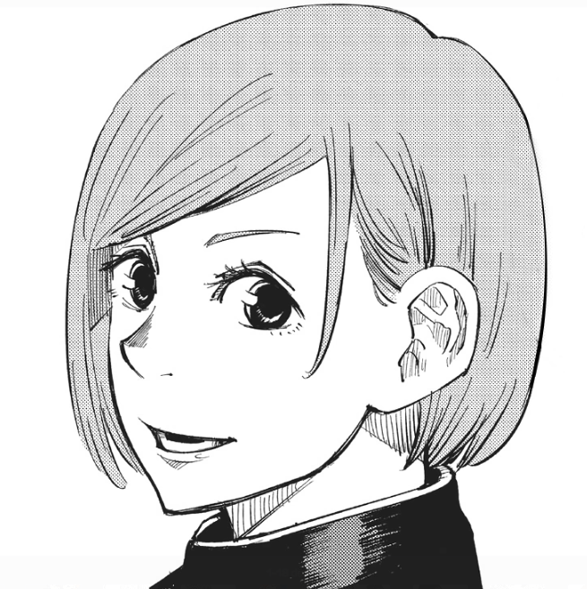Nobara Kugisaki es una de los protagonistas de la serie manga Jujutsu Kaisen. Es una estudiante de primer año del Colegio Técnico de Magia Metropolitana de Tokio, y compañera de Yuji Itadori y Megumi Fushiguro. Solía vivir en el campo, en un pueblo ubicado a cuatro horas de la Estación de Morioka. Llega a Tokio con el fin de convertirse en una Chamán de Jujutsu y poder encontrar a su amiga de la infancia, Saori.
Descripción
Nobara es una joven delgada y de estatura promedio, llegando a medir 160 centímetros[2]. En el manga, tanto sus ojos como su cabello son de color naranja, y se revela que su cabello fue teñido cuando vivía en su pueblo; mientras que en el anime, tanto sus ojos y su cabello son de un color marrón claro. Su vestimenta característica consiste en su propia versión del uniforme del Colegio Técnico de Magia Metropolitana de Tokio, que consiste en una chaqueta negra de cuello bajo, con una falda larga negra y medias del mismo color; en el anime, su vestimenta es representada en color azul marino. También utiliza un cinturón de color claro para sostener su martillo, clavos y su muñeca de paja; en el anime, su cinturón es representado de color marrón. Mientras se encuentra entrenando utiliza una sudadera con capucha de color claro con un patrón de flores oscuras alrededor de sus hombros, pantalones negros y zapatos blancos. Su vestimenta casual suele variar entre vestidos, y sudaderas, pantalones negros y zapatos blancos.
Personalidad
Nobara es una joven delgada y de estatura promedio, llegando a medir 160 centímetros. En el manga, tanto sus ojos como su cabello son de color naranja, y se revela que su cabello fue teñido cuando vivía en su pueblo; mientrasNobara es una joven apasionada, extremadamente expresiva y honesta sobre sus sentimientos. Desde el comienzo, muestra interés en todo lo relacionado con el mundo del modelaje y las compras, también muestra que logra enfadarse con facilidad si es rechazada. Muestra su lado verdadero y agresivo en ciertas situaciones, ya sea que provoquen vergüenza o sienta rechazo hacía la otra persona. Durante su enfrentamiento con Momo Nishimiya, ella expresa orgullo por su forma de ser y que prefiere seguir su camino siempre que esté segura de sí misma. Está dispuesta a dejar ir a las maldiciones cuando están tienen en su poder a rehenes; sabe lo que es importante para ella, y no trata solo de vivir una vida de lujo, está dispuesta a abandonar todo sí eso ayuda en salvar a otros. Nobara también posee un lado infantil y simpático, aunque rara vez suele mostrarlo y cuando está al lado de Yuji Itadori. También es capaz de trabajar en equipo, demostrándolo cuando hace equipo con Itadori y más adelante con otros chamanes. Ella también es lo suficientemente humilde como para ser capaz de admitir que no está al nivel de otros chamanes como Kento Nanami.
Yuju Itadori
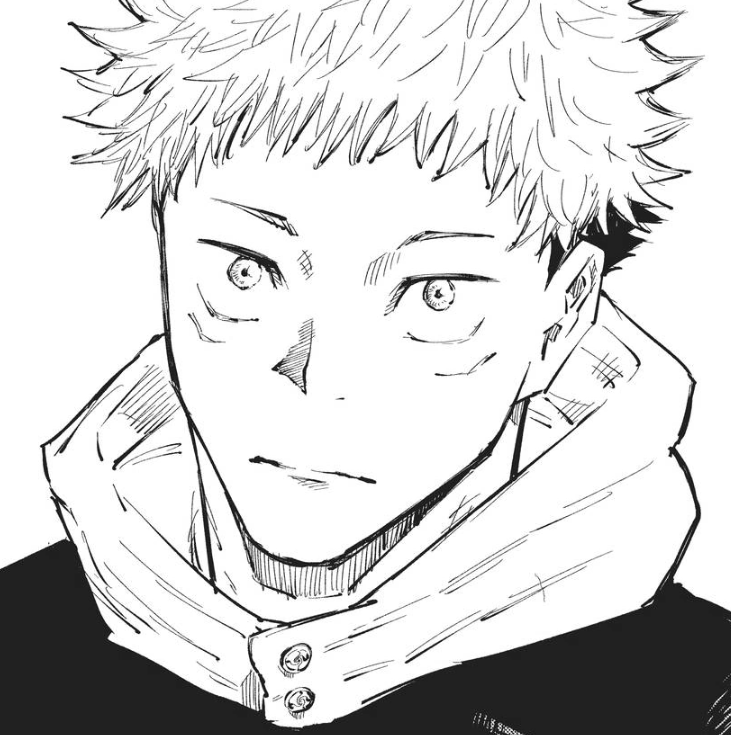Yuji Itadori es el protagonista de la serie manga Jujutsu Kaisen. Es un estudiante de primer año del Colegio Técnico de Magia Metropolitana de Tokio y recipiente del Rey de las Maldiciones, Sukuna. Solía ser estudiante de la Escuela Secundaria Municipal Sugisawa, donde demostró poseer una increíble fuerza física pero no tenía interés alguno en los deportes. Solía pasar gran parte de su tiempo en el Club de Ocultismo. Cualquier información relacionada a sus padres es desconocida y el único familiar que estuvo a su cuidado fue su abuelo. Cuando conoce a Megumi Fushiguro, termina arrastrado al mundo de los chamanes y maldiciones. En cierto punto de la historia, luego de ingerir uno de los dedos de Sukuna, éste encarna en él e Itadori se convierte su recipiente. A partir de entonces, Itadori tiene la misión de encontrar los restos de Sukuna que se encuentran esparcidos por todo Japón e ingerirlos, para luego ser ejecutado y destruir para siempre al Rey de las Maldiciones.
Descripción
Itadori es un adolescente musculoso y alto, llegando a medir 173 centímetros. En las ilustraciones del manga, su cabello es puntiagudo de marrón claro, mientras que en el anime es representado en tonos similares al rosa palo. Tiene cejas finas y grandes ojos marrones claros. Después de convertirse en recipiente para Sukuna, aparece una pequeña línea debajo de cada uno de sus ojos. Al comienzo de la serie, Itadori vestía una chaqueta con capucha de color claro, pantalones negros con la parte inferior enrollada y zapatos blancos. Después de que se inscribiera en el Colegio Técnico de Magia Metropolitana de Tokio, comenzó a usar su versión del uniforme: en el manga, usa una camisa negra de manga larga que se asemeja a un gakuran sobre una sudadera con capucha roja, pantalones negros y zapatos rojos, mientras que en el anime, la camisa y los pantalones son representados en color azul marino. Su vestimenta casual, tiende a consistir en sudaderas, pantalones negros y zapatos negros. No es del tipo que le guste usar sudaderas, pero las usa porque es indeciso con las prendas a utilizar. En los recuerdos falsos ocurridos en el Capítulo 35, asistía a la secundaria con Aoi Todo y Takada-chan. Fue visto utilizando un gakuran con la parte superior abierta, revelando una sudaderas de color roja con unos pantalones negros. En otros recuerdos falsos ocurridos en el Capítulo 106, se encontraba reunido junto a Choso, Esou y Kechizu, donde fue visto utilizando una sudadera en tonos claros y unos pantalones oscuros. Durante su busqueda por Kinji Hakari, se lo vio utilizando, una campera de color claro con puños y cuello de color oscuros.
Personalidad
Itadori es una persona honesta, amigable y le resulta bastante fácil socializar con otros durante un primer encuentro. Se preocupa mucho, no sólo por sus camaradas, sino por cualquiera que vea y tenga voluntad propia, a pesar de lo profunda o superficial que sea su conexión con ellos. Le importa mucho el "valor de una vida" y con este fin se asegurará de que otros reciban una "muerte justa". Se enoja con facilidad ante la crueldad pura y el juicio injusto de otras personas. Kento Nanami asegura que Itadori es capaz de sentir odio y dolor de otros como si fuera su dolor propio. Uno de los rasgos que definen a Itadori es su voluntad de sacrificarse por los demás, provocada por las últimas palabras de su abuelo, donde le pide que siempre ayude a otros. Por ejemplo, cuando Megumi Fushiguro y él estaban a punto de ser asesinados por una maldición, Itadori se tragó un dedo de Sukuna para exorcizarlo y salvarlos, a pesar de que ese fue el primer encuentro con Megumi. Sostiene que no desea matar a las maldiciones, porque una vez que lo haga, siempre tendrá que recurrir al asesinato, por lo que prefiere derrotarlos y luego exorcizarlos para que reciban una muerte justa. Durante un enfrentamiento con Aoi Todo, reveló que su tipo de chica es "una chica alta con un gran trasero, como Jennifer Lawrence". Sin embargo, se termina demostrando que es una persona demasiado descuidada en temas relacionados con el amor y no le importa realmente la apariencia de las mujeres. Reveló que durante sus días como estudiante de secundaria, solía sentirse atraído por la personalidad, naturaleza y el comportamiento de las personas. Suele divertirse y mostrar alegría de manera seguida. Suele adaptarse rápidamente a las bromas y al humor de su maestro, Satoru Gojo, además, de que tiende a dejarse llevar seguido por las ideas que éste plantea. Es bastante conocido por ser muy bromista y un maestro de las imitaciones, aunque a medias. Siempre siguió el fuerte ideal de querer preservar la vida de otros sin importar las razones que atenten contra ésta. Durante su enfrentamiento con Mahito, en el Arco de El Incidente de Shibuya, Itadori confesó que siempre sintió la necesidad de negar el deseo de querer matar sin razón, algo que describía perfectamente a Mahito. Sin embargo, al finalizar su batalla, le revela a Mahito que ya no necesita una razón específica para asesinar. Tras observar la masacre que Sukuna llevó a cabo mientras tenía el control de su cuerpo, sumado a un montón de recuerdos vagos de las personas que asesinó y tras haber presenciado distintos sucesos trágicos en Shibuya, Itadori siente una gran culpa por todo lo sucedido dado que de cierta forma él fue responsable y se ha vuelto más deprimido y serio, quedando con un fuerte trauma por las muertes que ha presenciado, a pesar de esto, lucha para mantenerse con vida y toma la responsabilidad de resolver todo por su cuenta.
Yuta Okkotsu
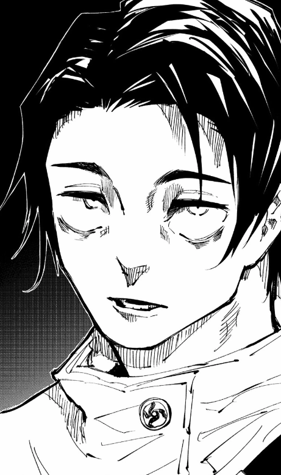Yuta Okkotsu es el protagonista de la serie manga Tokyo Metropolitan Curse Technical School y uno de los personajes de la serie secuela, Jujutsu Kaisen. Es uno de los cuatro chamanes de Clase Especial y estudiante de segundo año del Colegio Técnico de Magia Metropolitana de Tokio, compañero de Maki Zenin, Panda y Toge Inumaki. Se encontraba en una misión con Miguel en Kenia, pero tras el incidente en Shibuya, regresó a Japón. Fue amigo de la infancia de Rika Orimoto, quien murió en un trágico accidente automovilístico. Por el rechazo que sentía con la muerte de su amiga, la convirtió en una maldición de Grado Especial. Desde entonces, se vio acechado por el poder de su amiga, ahora maldita. Para evitar hacer sufrir a otros, accede a ser ejecutado, en su lugar, Satoru Gojo lo inscribe al Colegio Técnico de Magia Metropolitana de Tokio para entrenarlo y convertirlo en un chamán con el cual pueda trabajar a futuro.
Descripción
Yuta es un adolescente delgado y de buena estatura. Durante Tokyo Metropolitan Curse Technical School, solía llevar su cabello negro despeinado y gran parte de éste tapaba parte de su frente. A partir de Jujutsu Kaisen, lleva su cabello arreglado y separado por la mitad, parte de éste cae hacía la izquierda tapando parte de su cara. Sus ojos son de azul oscuro y es característico que debajo de sus ojos tenga ojeras debido a la falta de sueño. Su lenguaje corporal hace que sea fácil decir que Yuta es muy temeroso, su postura, es encorvada. En su antigua escuela, usaba una camisa blanca, pantalones y zapatos negros como uniforme. Como ropa casual, utiliza camisas de mangas cortas con pantalones oscuros. Después de transferirse al Colegio Técnico de Magia Metropolitana de Tokio, recibe su propia versión del uniforme, que consiste en una chaqueta blanca holgada con mangas que le llegan hasta los antebrazos, mientras que el resto de la vestimenta permanece de color negro. Durante la época invernal, suele ser visto usando la chaqueta oscura del colegio. En caso de ir a una misión o estar presente en un combate, lleva su katana en su respectiva funda.
Personalidad
Al comienzo solía ser un joven demasiado tímido y solitario que constantemente recibía acoso por parte de sus compañeros y otras personas que le rodeaban. Debido a que Rika Orimoto, al transformarse en maldición, lo persiguió desde una edad muy temprana, no pudo establecer relaciones sanas con ninguna persona, y ha perdido toda la confianza en sí mismo. Esto hace que Yuta sea alguien al que le cuesta interactuar con los demás, y sea temeroso ante personalidades más explosivas como, por ejemplo, la de Maki Zenin. Cree que todo lo malo que le pasa a la gente que está cerca de él, es totalmente su culpa, lo que significa que se preocupa genuinamente por otras personas, en un comienzo prefiere ser ejecutado en total aislamiento debido a que es consciente del daño que causa el estar con Rika, y hasta prefiere quedarse en total aisladamente para no dañar a nadie. Maki acusó a Yuta de ser un niño que toda la vida había actuado como una víctima debido a la maldición de su amiga, y lo trato de ingenuo al creer poder pasar por el Colegio Técnico de Magia Metropolitana de Tokio sin la determinación necesaria, ante esto Yuta no contradice las palabras de Maki sino que las afirma, demostrando ser consciente de aquello. Mas tarde cuando tiene una misión junto a Maki, la abrumación de no solo tener a dos niños heridos sino también a su compañera, lo ayuda a determinar su primera meta en la vida, que es poder tener conexiones con alguien, esto ayuda a Yuta a darse cuenta de que profundamente desea la confianza para sentir que, a pesar de dañar a la gente, está bien para él seguir con vida. A partir de ese punto, su personalidad cambia para bien, comienza a mostrarse más relajado y confiado, aunque su naturaleza tímida permanece intacta. Inclusive intenta entender a alguien como Toge Inumaki, y logra establecer una conexión amistosa con este. Ganar amigos ayuda a Yuta en ganar aún más confianza en sí mismo, y el comenzar a querer encontrar una manera de exorcizar Rika, dado que se siente responsable de que ella se convirtiera en una maldición. Yuta también comienza a esforzarse mucho más en sus entrenamientos con Maki, comenzó a tomar consejos e incluso pedirlos. En esencia, Yuta quiere convertirse en alguien que pueda ayudar a mantener a otros fuera de peligro. Yuta ha demostrado una extremo aprecio por sus amigos, por lo que cuando estos salen dañados no duda en mostrar el lado más oscuro de sí mismo. Esto se ve claramente momentos previos de su pelea con Suguru Geto, cuando vio a sus amigos lastimados, no dudo en decirle a Geto que lo asesinaría por ello. Su enojo también le permitió dominar a Rika, dado que cuando esta quería herir a Maki Zenin, Yuta por primera vez logra hacer que Rika retroceda a consciencia. Inclusive estuvo dispuesto a dar su vida a Rika para así matar a Geto, todo con tal de vengar a sus amigos, quienes fueron las únicas personas que le daban la confianza para seguir viviendo. Actualmente, se puede notar que Yuta sigue teniendo este aspecto, dado que cuando supo que durante el ataque de Sukuna en Shibuya, Toge Inumaki había perdido un brazo, determinó que el mataría a Yuji Itadori, ignorando la actitud condescendiente de los altos mandos del colegio jujutsu tenían hacía él, y también no importándole que Yuji Itadori fuera el alumno de Satoru Gojo, el profesor que un año antes había salvado su vida. Cuando Yuta regresó a la preparatoria de hechicería después de un tiempo en el extranjero, lo acompañó una nueva Rika y parecía como si estuviera perdido en su oscuridad. Estuvo de acuerdo en matar al otro alumno de Gojo, Yuji Itadori, para los superiores y afirmó que era una venganza por cortarle el brazo a Toge. Yuta tenía una personalidad mortalmente seria y fría que iba directo al grano. Intentó matar a Yuji antes de intercambiar palabras y luego se disculpó mientras cometía el acto. Sin embargo, todo esto fue un acto para ayudar a proteger a Yuji de los altos mandos. Yuta tuvo que actuar de cierta manera para hacerlo creíble y curó a Yuji antes de que el de primer año muriera de forma permanente. Aunque Yuta nunca conoció a Yuji, hizo todo lo posible para engañar a la autoridad y ayudar a Yuji porque Gojo se lo pidió. Yuji es importante para las personas que son valiosas para Yuta y esa fue una razón más que suficiente para que él ayudara. También simpatiza con Yuji porque estaba exactamente en la misma situación, listo para ser ejecutado con un poder que no podía esperar contener. Yuta no culpa a Yuji por las acciones de Sukuna. Sin la fachada de un asesino frío, Yuta sigue siendo una persona amigable por naturaleza que se ha desarrollado mucho como persona. Es mucho más sociable y menos tímido de lo que solía ser. Cuando Gojo visitó a Yuta en África, el profesor se sorprendió de que su alumno estuviera contando chistes. Al reunirse con Maki, Yuta estaba emocionado de verla y expresó preocupación por sus heridas.
Toge Inumaki
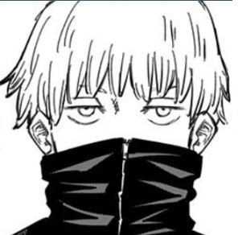Toge Inumaki es uno de los personajes de la serie manga Tokyo Metropolitan Curse Technical School y su serie secuela, Jujutsu Kaisen. Es un estudiante de segundo año del Colegio Técnico de Magia Metropolitana de Tokio y miembro del Clan Inumaki.
Descripción
Toge es un joven delgado y de baja estatura. En el manga, su cabello y sus ojos son de un color marrón claro, mientras que en el anime, su cabello es cambiado a uno color blanco y ojos color morado. Posee cejas finas y en ambos costados de su boca lleva dos círculos con puntos y uno en la lengua representando el sello maldito del Clan Inumaki. Tras los eventos ocurridos durante el Arco de El Incidente de Shibuya, perdió parte de su brazo izquierdo, al verse atrapado en la expansión territorial de Sukuna. Su vestimenta característica consiste en su propia versión del uniforme del Colegio Técnico de Magia Metropolitana de Tokio, que consiste en una chaqueta negra en el manga y azul marino en el anime de cuello alto con cremallera que se extiende hasta cubrir su boca, usa pantalones negros y en sus pies, lleva zapatos blancos. En su primer año, llevaba un cuello marrón claro y zapatos negros. En el anime, su uniforme completo es representado en color azul marino. En ciertas ocasiones, lleva consigo un megáfono blanco para evitar gritar y dañar aún más su garganta. En sus tiempos de entrenamiento, viste una camisa blanca de mangas cortas con cuello negro que contiene una cremallera para ocultar su sello, pantalones negros y zapatos blancos.
Personalidad
Durante Tokyo Metropolitan Curse Technical School, solía ser alguien bastante tranquilo y reservado. Le gustaba pasar el tiempo solo y dedicarlo a cosas a las que no le provocaría daño alguno. Se cree que esto era para no maldecir a sus compañeros por error, o simplemente por miedo a lastimarlos. Sí bien, Inumaki suele ser mal entendido por aquellos que no lo conocen, es un joven bastante amable, cariñoso y tiene la costumbre de hacer bromas. Cómo cualquier adolecente normal, aunque no lo sea. Debido a que es usuario de la Técnica de Discurso Maldito, su vocabulario se basa en ingredientes de onigiri, esto con el propósito de no maldecir a otros por error.
Panda
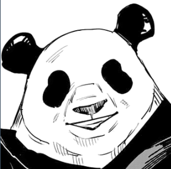Panda es uno de los personajes de la serie manga Tokyo Metropolitan Curse Technical School y su serie secuela, Jujutsu Kaisen. Es un estudiante de segundo año del Colegio Técnico de Magia Metropolitana de Tokio y compañero de Maki Zenin, Toge Inumaki y Yuta Okkotsu. Es un Cuerpo Maldito que posee emociones y consciencia propia, y debido a esto, es considerado la mejor creación del Director, Masamichi Yaga. Su interior está compuesto por tres núcleos: el hermano menor "Panda", el hermano mayor "Gorila" y la hermana mayor "Triceratops".
Descripción
Panda es un cuerpo maldito con el aspecto de un Panda, pese a eso se lo ha visto usar ropa y accesorios en reiteradas ocasiones. Suele llevar puesto un brazalete en el brazo que dice "I love Panda". Durante el invierno se lo ha visto llevar ropa abrigada, como una chaqueta de color claro, y una bufanda con un patrón de caras de panda. Durante combate, Panda utiliza dos bandas alrededor de sus nudillos con la cara de un panda en ellos.
Personalidad
Panda es una persona amable, afectuosa, empática y sabia. Suele ser un travieso a veces y bromear mucho. No se considera humano además de que nunca a tenido celos de estos y hasta por la capacidad sentimental que los humanos poseen llega a sentir repulsión, además de que no los llega a entender del todo. Pese al comportamiento hostil de Mechamaru, nunca demostró un odio hacia éste, sino que intento entender su odio en todo momento. Atsuya Kusakabe ha dicho que, pese a ser un cuerpo maldito, tiene un corazón más humano que él.
Maki Zenin
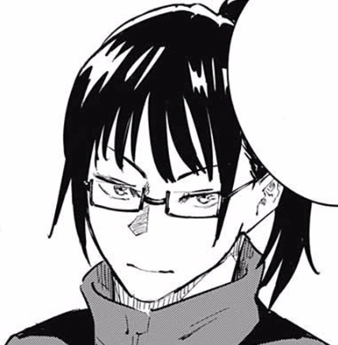Maki Zenin es uno de los personajes de la serie manga Tokyo Metropolitan Curse Technical School y su serie secuela, Jujutsu Kaisen. Es una estudiante de segundo año del Colegio Técnico de Magia Metropolitana de Tokio. Forma parte de la familia principal del Clan Zenin, una de los tres clanes de élite de los chamanes y es hermana gemela de Mai Zenin.
Descripción
Maki es una adolescente delgada y de estatura alta, llegando a medir 170 centímetros. Su cabello es negro y completamente liso; durante su primer año en el Colegio de Tokio, llevaba una cola de caballo y flequillo hacia un costado, a partir de su segundo año, lleva la misma cola de caballo pero con un flequillo recto. Usa un par de anteojos que contienen energía maldita que le permiten ver las maldiciones. En el anime, su cabello es representado de un color negro verdoso y ojos marrones. Tras recibir un ataque de fuego por parte de Jogo durante el Arco de El Incidente de Shibuya, Maki quedó con visibles quemaduras tanto en su rostro como en ambos brazos, su pelo ahora se extiende hasta su mentón y lleva un parche en el ojo derecho. Ahora usa unas gafas redondas, ahora su uniforme escolar consiste en una chaqueta oscuras de mangas largas y abiertas con los característicos botones del Colegio Técnico de Magia Metropolitana de Tokio, debajo usa una musculosa ceñida, y unos pantalones de tiro alto de color oscuro, un cinturón de color claro los sujeta y usa unos zapatos oscuros. Su vestimenta característica consiste en su propia versión del uniforme del Colegio Técnico de Magia Metropolitana de Tokio. Utiliza una chaqueta negra de manga larga, falda, medias y zapatos negros; en el anime, su uniforme completo es representado en color azul marino. En sus tiempos de entrenamiento, viste una camiseta negra con puños, cuello y borde inferior color oscuro, pantalones cortos de color oscuro sobre pantalones negros y zapatos blancos. Mientras entrenaba a Yuta Okkotsu, vestía la misma camiseta, pantalones cortos negros, calcetines negros y zapatos blancos. Su ropa casual consiste en una sudadera con capucha blanca sobre una camisa horizontal negra y blanca, pantalones cortos blancos sobre pantalones negros y botas blancas. Cuando era niña, tenía flequillo negro y su cabello llegaba hasta su mentón, usaba un kimono de color oscuro con una faja negra. Cuando dejó el Clan Zenin, vestía una yukata en tonos claros y una hakama negra.
Personalidad
Como miembro de la familia principal del Clan Zenin, se esperaba que contará con la habilidad de poder heredar la técnica que se transmite por generación dentro del clan, sin embargo, nació sin la habilidad de poder hacer uso de la energía maldita, lo que le impide poseer una técnica innata. Ante su carencia de poder, estuvo destinada a convertirse en una simple sirvienta para el resto de su familia. A pesar de las circunstancias que la rodeaban, deseaba convertirse en una persona extremadamente fuerte, por lo que decidió abandonar el clan con el fin de lograr su cometido. Antes de irse, declaró que volvería nuevamente para ser la siguiente en dirigir a la familia. Dado que es considerada un fracaso del clan, creció con dicha idea en mente y se considera a sí misma alguien de 'clase baja'. Con el fin de demostrarle a todos aquellos que estaban equivocados, se esfuerza al máximo y persigue el deseo de convertirse en alguien fuerte para poder demostrar, a su vez, que es mejor que ellos. Durante su primer año en el Colegio Técnico de Magia Metropolitana de Tokio, solía ser una joven un tanto amargada, directa y con mal genio. Debido a su manera brusca de actuar, tenía bastante problemas para poder abrirse con el resto de las personas y, cuando sentía que podía llegar a ser aceptada por otros, era demasiado dura consigo misma e intentaba rechazar fuertemente la amabilidad de quienes la rodeaban. A partir de su segundo año, se convierte en una persona mucho más pasiva, amable y empática con el resto de sus compañeros.
Kinji Hakari
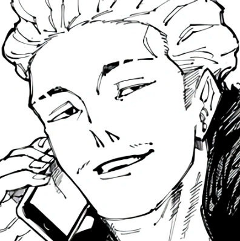Kinji Hakari es uno de los personajes de la serie manga Jujutsu Kaisen. Es un estudiante de tercer año en el Colegio Técnico de Magia Metropolitana de Tokio que fue suspendido durante el Desfile Nocturno de los Cien Demonios. Actualmente Hakari es el jefe del Club de Peleas Subterráneo, junto a su pareja Kirara Hoshi, en donde gana dinero gracias a las apuestas que se llevan a cabo allí.
Descripción
Hakari es un joven de cuerpo robusto. Tiene cortas rastas oscuras con la parte baja de la cabeza rapada. Su ojos son pequeños, sus cejas no tan pobladas, y tiene un mostacho. Actualmente, Hakari tiene el cabello de color claro, muy ondulado y abundante en la parte superior, en ambas cejas tiene dos cortes verticales y posee una perforación en su oreja. En su breve aparición, se pudo visualizar que vestía el uniforme del Colegio Técnico de Magia Metropolitana de Tokio que consiste en una chaqueta azul asimétrica con cuello alto y dos botones del lado izquierdo ambos grabados con el logo de la escuela. El uniforme se completa con pantalones azules a juego. Se lo vio vistiendo una abrigo oscuro, debajo una remera de color claro con un collar, debajo viste pantalones de color oscuro y zapatos de vestir.
Personalidad
Hakari es una persona visionaria y "apasionada", ha declarado que ama la "pasión" que puede desencadenar algunas situaciones, considera que la forma más directa para intercambiar esa "pasión", son las apuestas y considera estas como vida en sí. A las personas que no le interesan las apuestas no forman parte de su interés, y expresa que son personas que "no comprenden la naturaleza de la vida" dado que le temen al fracaso y a la ruina. Su sueño es algún día poder conquistar la "pasión" de Japón a través de su club de lucha subterráneo. Según Gege Akutami, Hakari no es tan inteligente en lo que respecta los estudios, sin embargo, durante su charla con Yuji Itadori, recibió una llamada de Kirara Hoshi, y dedujo de inmediato que algo andaba mal y al instante logro engañar rápidamente a Yuji Itadori.
Kirara Hoshi
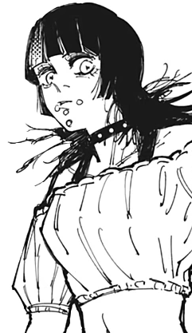Kirara Hoshi es uno de los personajes de la serie manga Jujutsu Kaisen. Es un estudiante de tercer año en el Colegio Técnico de Magia Metropolitana de Tokio. Actualmente Kirara ayuda a Kinji Hakari en el Club Subterráneo de Peleas.
Descripción
Kirara es un chico delgado con cabello liso oscuro que se extiende un poco más por debajo de sus hombros, tiene un flecho con un mechón tenido de color claro justo arriba de su ojo derecho, tiene cejas finas, sus ojos son grandes y ambas pupilas tiene forma de estrella. En la zona de su barbilla tiene cuatro piercings, dos repartidos en cada comisura de su boca, y otros dos en su barbilla. Kirara tiene como accesorios una gargantilla con tachas y pulseras varias en ambas muñecas, usa un crop top negro de tirantes y otro crop top holgado con los hombros descubiertos, usa unos vaqueros algo holgados de tiro bajo con un cinturón blanco, y calza unos zapatos cerrados oscuros con tacón.
Personalidad
Kirara ha mostrado ser una persona devota hacia Kinji Hakari, le fascina y alegra verlo apasionado y siempre procura hacer todo lo posible para que esa pasión este lo más protegida posible. Cuando vio a Panda junto a Megumi Fushiguro, dedujo al instante que Yuji Itadori también estaba con ellos y su primera acción, fue querer avisarle a Kinji de su descubrimiento para así, poder protegerlo. Además, Kirara no confía en ninguna persona relacionada al Colegio Técnico de Magia Metropolitana de Tokio, y su posición parece no doblegarse fácilmente.
Shoko Leiri
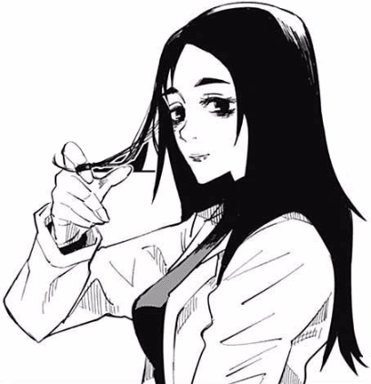Shoko Ieiri es uno de los personajes de la serie manga Jujutsu Kaisen. Es una chamán y doctora del Colegio Técnico de Magia Metropolitana de Tokio, y antigua compañera de Satoru Gojo y Suguru Geto.
Descripción
Shoko es una mujer delgada y de alta estatura. Su cabello, en el manga es representado de color negro, mientras que en el anime es representado de marrón, y éste se extiende hasta un poco más abajo de sus hombros. En algunas ocasiones, fue vista con su cabello recogido en una cola de caballo. Posee cejas triangulares y sus ojos lucen decaídos y rodeados de ojeras; bajo su ojo derecho posee un lunar. Su vestimenta característica consiste en una camisa de color claro, pantanos negros y zapatos con tacos. Sobre la camisa utiliza una bata de laboratorio blanca. Durante sus días como estudiante, solía tener el cabello corto y se extendía hasta la parte inferior de la cabeza. Sus ojos lucían más energéticos y no tenía ojeras. Hacía uso de su propia versión del uniforme del Colegio Técnico de Magia Metropolitana de Tokio, que consistía en una chaqueta negra de cuello alto y una falda negros. En sus momentos de descanso, viste camisas de mangas largas, pantalones cortos y zapatos negros. En algunas ocaciones, hacía uso de los lentes de sol de Satoru Gojo.
Personalidad
La mayor parte del tiempo se muestra seria y reservada en varios asuntos. Ha demostrado tomarse muy en serio su trabajo y le molesta rotundamente que otros cuestionen sus capacidades. No parece importarle el asunto de otros, sin embargo, siempre intenta hacerlos sentir bien; por ejemplo, cuando Yuji Itadori se sintió culpable por haber 'asesinado' a un humano desfigurado, Shoko intentó hacerlo sentir mejor alegando que murió por efectos secundarios al haber recibido un cambio en su cuerpo. Por otro lado, es de las pocas personas capaces de interferir en las bromas o asuntos serios de Satoru Gojo y suele cuestionarlo cada vez que éste molesta a Kiyotaka Ijichi. También, ha mostrado cierto agrado cuando ve a su antiguo compañero feliz. Cuando era joven, solía lucir bastante distraída y prefería hacer otra cosa que pasar tiempo en clases; Suguru Geto y Satoru Gojo solían cubrirla cada vez que escapaba de las enseñanzas de Masamichi Yaga. Después de graduarse, obtuvo su licencia médica en tan sólo dos años haciendo trampa.
Kiyotaka Ijichi
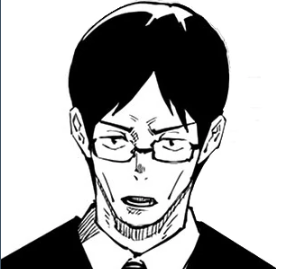Kiyotaka Ijichi es uno de los personajes de la serie manga Jujutsu Kaisen. Fue antiguo estudiante del Colegio Técnico de Magia Metropolitana de Tokio y, actualmente, trabaja como asistente auxiliar e informante de las misiones para los estudiantes y chamanes que integran al Colegio. También es asistente directo del Director Masamichi Yaga.
Descripción
Kiyotaka es un hombre delgado y bastante alto. Tiene su cabello de color negro, un poco largo y lo lleva dividido con una raya en medio. Sus cejas son curvas y sus mejillas huesudas. Tiene ojos de color marrón oscuro y usa anteojos. Su vestimenta característica consiste en un traje. Utiliza una camisa blanca con corbata negra, blazer, pantalones y zapatos negros. Durante Tokyo Metropolitan Curse Technical School, su aspecto fue bastante similar al acutal, excepto que su cabello no era tan largo.
Personalidad
Es una persona responsable y diligente. Se autoproclama un "luchador", sin embargo no está destinado a estar en el campo de batalla dado que siempre tiene un papel de apoyo en las misiones. Constantemente se ve envuelto entre las decisiones que toma Satoru Gojo, que suelen contraponerse contra la de los altos rangos del Colegio Técnico de Magia Metropolitana de Tokio. Con el fin de evitar que éste se moleste, suele cumplir con sus pedidos, incluso sí eso lo obliga a tener que enfrentarse al Director Masamichi Yaga. Cuando suele informar sobre malas noticias a su compañero, suele ponerse bastante nervioso y tiene la costumbre de disculparse más de la cuenta. Sí bien, Gojo es alguien a quien teme, tiene un miedo mayor por Kento Nanami a quien considera el más adulto entre todos e, incluso, confeso que podría llorar sí es regañado por éste.
Akari Nitta
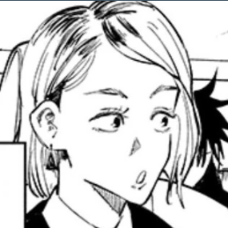Akari Nitta es uno de los personajes de la serie manga Jujutsu Kaisen. Es asistente auxiliar e informante de las misiones para los estudiantes y chamanes que integran al Colegio Técnico de Magia Metropolitana de Tokio.
Descripción
Akari es una mujer delgada y de estatura promedio. Su cabello castaño claro siempre suele llevarlo suelto y se extiende hasta por encima de sus hombros con una raya al lado derecho, formando un flequillo; en el anime es representado en tonos rubios. Tiene cejas definidas triangulares y ojos grandes de color marrón. La mayor parte del tiempo es vista utilizando su vestimenta típica de trabajo: consiste en un traje de color negro con camisa blanca, corbata negra, zapatos oscuros, y usa unos pendientes largos en forma de triángulos. En el anime, la corbata es de color rojo y no utiliza pendientes.
Personalidad
Akari posee una personalidad sociable, alegre y amistosa la mayor parte del tiempo. Es bastante sobre-protectora con su hermano menor, Arata Nitta, hasta el punto en que accedió a recibir entrenamiento para unirse al Colegio Técnico de Magia Metropolitana de Tokio con el fin de protegerlo. Tiende a estresarse cuando su hermano la ignora. Suele adaptarse rápido a diferentes situaciones y confía plenamente en la capacidad de lucha de sus compañeros, cuestión que demostró cuando se adaptó rápidamente al plan de Nobara Kugisaki donde debía dejar a la joven luchando con el fin de que logrará escapar y llegar hasta donde se encontraba Kiyotaka Ijichi. Así mismo, si siente que existen vías más rápidas para conseguir información, ha demostrado no tener problemas de dejar que otros se encarguen de dichos asuntos, como cuando dejó que Megumi Fushiguro se encargue de la investigación del Puente Yasohachi dado que conocía al conserje del colegio; aunque Megumi consideró su accionar como "abandono de responsabilidad.